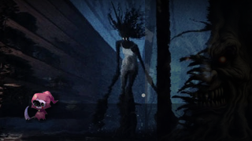
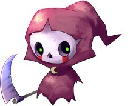
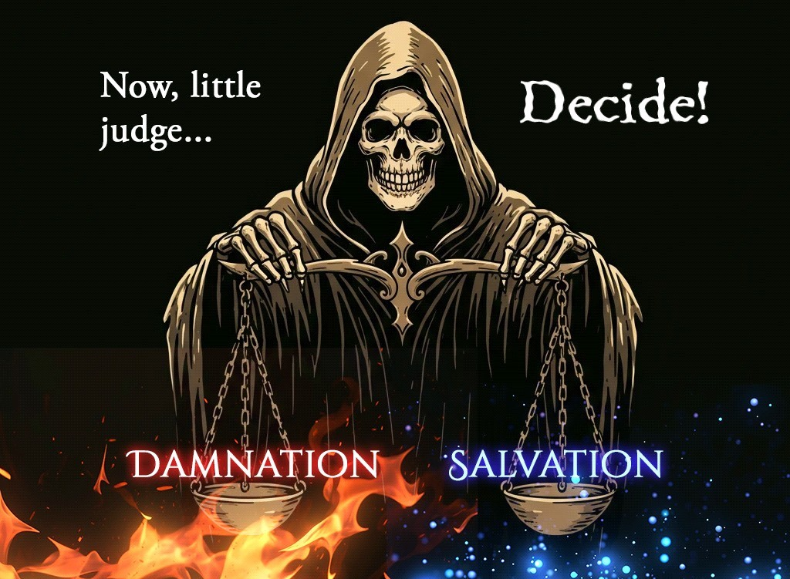
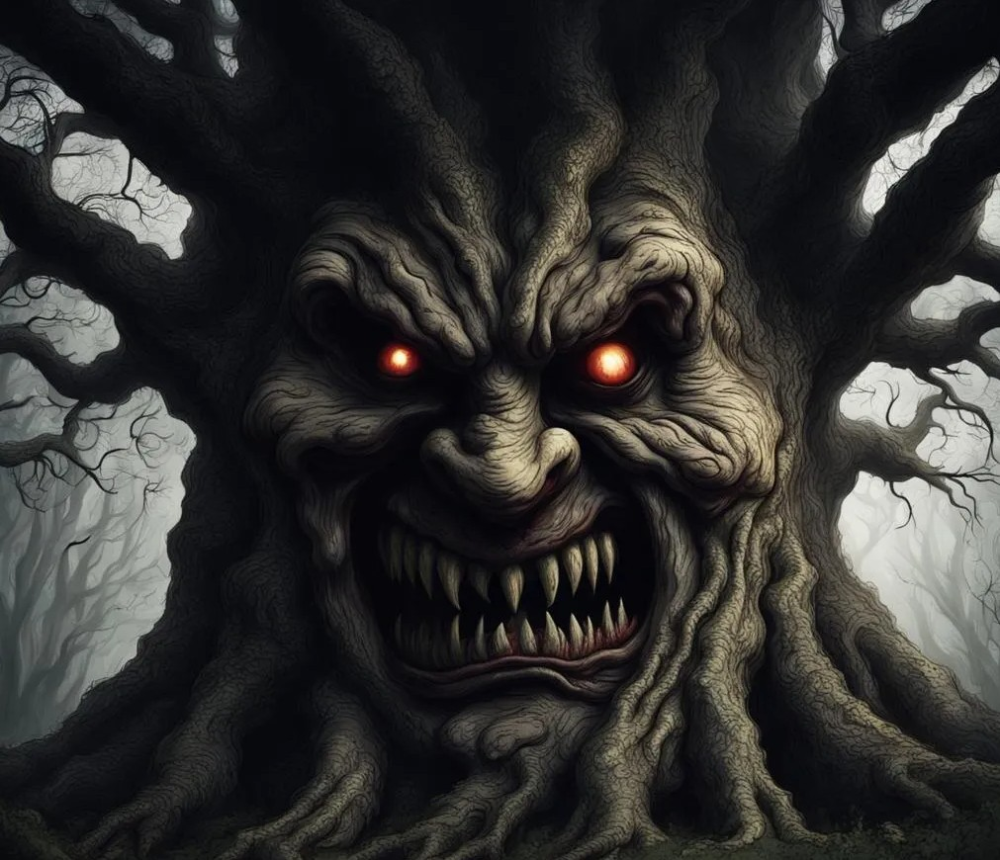

Graveyard
Nine ghosts. One little Judge. A soft-horror point-and-click prototype about evidence, mercy, punishment, and the weight of forever.



This Pages version is a lightweight browser prototype. The full source remains a Unity + PowerQuest project.
A true Unity browser build still needs Unity WebGL export. This page lets people try the story loop now.
View the repository or build desktop/WebGL from Unity.